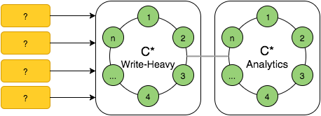
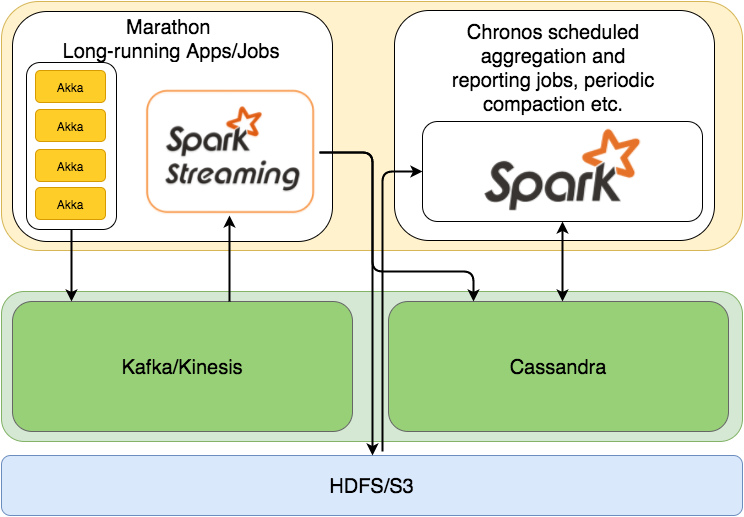

这篇博客是talk given at Big Data AW meetup这篇文章的后续， 并且关注于不同的用例及设计方法，从而使用SMACK(Spark, Mesos, Akka, Cassandra, Kafka) Stack构建多个可扩展的数据处理平台。 当stack足够简洁并且只包含少量的组件，它就有可能实现不同的系统设计，这样就可以既有批处理，又有流处理。 但是也会有更加复杂的Lambda架构和Kappa架构。所以让我们通过概述快速的达成理解上的一致，然后继续看产品项目经验里总结的设计和实例。
概述

Spark - 分布式、大规模数据处理的快速并且通用的引擎
Mesos - 集群资源管理系统，提供了高效的分布式应用程序的资源隔离和共享
Akka - 是一个工具包和运行时间，他能够在Java虚拟机上构建高并发，分布式和高容错的消息驱动应用。
Cassandra - 分布式、高可用的数据库，设计用于处理多个数据中心的大量的数据
Kafka - 一种用于处理实时数据馈送的高吞吐量、低延迟的分布式发布订阅消息系统
存储层: Cassandra
Cassandra拥有着众所周知的高可用性高吞吐量的特征，并且能够处理大量的写入负载和生存集群节点故障。 在CAP定理条件中，Cassandra为操作提供了可调的一致性和可用性。
更有趣的是，当涉及到数据处理，Cassandra可以线性扩展（通过往集群增加节点来解决增大的负载），另外他还提供了跨数据中心(XDCR)复制的能力，实际上XDCR不仅提供了复制的能力，更多的提供了许多有趣的用例能够被使用:
- 地理分布的数据中心可以按特定的区域或者按最靠近客户的区域来处理数据
- 跨数据中心的数据迁移：在出现故障后做恢复或将数据移动到一个新的数据中心
- 工作负载的操作和分析分离
但是所有的功能都有他们自己的价值，对Cassandra来说，它的价值就是它的数据模型, 它可以被认为是作为嵌套排序图，分布在集群节点的按集群列排序或分组的分区键值和条目。接下来是一个小例子:
CREATE TABLE campaign(
id uuid,
year int,
month int,
day int,
views bigint,
clicks bigint,
PRIMARY KEY (id, year, month, day)
);
INSERT INTO campaign(id, year, month, day, views, clicks)
VALUES(40b08953-a…,2015, 9, 10, 1000, 42);
SELECT views, clicks FROM campaign
WHERE id=40b08953-a… and year=2015 and month>8;
在一定范围内获得明确的数据，键值必须也是明确的，并在列表中的最后一列以外的任何范围子句都不允许。 此约束被引入到限制多个扫描不同的范围，这将产生随机访问磁盘和降低性能。这意味着要小心设计数据模型对阅读查询限制读/扫描的量，从而当它来支持新查询时导致较小的灵活性。这是一些 C* 数据模型 101 的幻灯片，提供了一些CQL表是如何被本质地体现的例子。
但是如果有一些表需要和其他一些表连接呢？让我们考虑下以下情况：计算给定月份里的所有campaigns中的每个campaign的总视图。
CREATE TABLE event(
id uuid,
ad_id uuid,
campaign uuid,
ts bigint,
type text,
PRIMARY KEY(id)
);
根据给定的模型，唯一的办法是读取所有的campaigns，读取所有的events，将符合要求的部分（匹配campaign id的）相加，并且指给campaign。由于存储在Cassandra里的数据量非常的大并不适合内存化，所以实施这样的应用程序非常有挑战性。因此处理这中数据就应该由一个分布式的方式来完成，而Spark则是一个完美的选择。
处理层: Spark
 Spark操作的主要抽象概念是RDD(弹性分布式数据集, 元素的一种分布式集合)， 工作流程主要分为四个部分:
Spark操作的主要抽象概念是RDD(弹性分布式数据集, 元素的一种分布式集合)， 工作流程主要分为四个部分:
- RDD 操作(变换和行动)形式DAG (无回路有向图)
- DAG被拆分成多任务的多个阶段，然后提交到集群管理。
- 阶段结合了任务不需要重新分配。
- 任务跑在工人和结果上，然后返回给客户端
下面演示Spark和Cassandra如何一起解决上面的问题的:
val sc = new SparkContext(conf)
case class Event(id: UUID, ad_id: UUID, campaign: UUID, ts: Long, `type`: String)
sc.cassandraTable[Event]("keyspace", "event")
.filter(e => e.`type` == "view" && checkMonth(e.ts))
.map(e => (e.campaign, 1))
.reduceByKey(_ + _)
.collect()
Interaction with Cassandra is performed via spark-cassandra-connector which makes it really easy and straightforward. There's one more interesting option to work with NoSQL stores - SparkSQL, which translates SQL statements into a series of RDD operations.
case class CampaignReport(id: String, views: Long, clicks: Long)
sql("""SELECT campaign.id as id, campaign.views as views,
campaign.clicks as clicks, event.type as type
FROM campaign
JOIN event ON campaign.id = event.campaign
""").rdd
.groupBy(row => row.getAs[String]("id"))
.map{ case (id, rows) =>
val views = rows.head.getAs[Long]("views")
val clicks = rows.head.getAs[Long]("clicks")
val res = rows.groupBy(row => row.getAs[String]("type")).mapValues(_.size)
CampaignReport(id, views = views + res("view"), clicks = clicks + res("click"))
}.saveToCassandra(“keyspace”, “campaign_report”)
With several lines of code it's possible to implement naive Lamba design which of course could be much more sophisticated, but this example shows just how easy this can be achieved.
Almost MapReduce: bringing processing closer to data
Spark-Cassandra connector is data locality aware and reads the data from the closest node in a cluster thus minimizing the amount of data trasfered around the network. To fully facilitate Spark-C* connector data locality awareness, Spark workers should be collocated with Cassandra nodes.
 Alongside with Spark collocation with Cassandra, it makes sense to separate your operational (or write-heavy) cluster from one for analytics:
Alongside with Spark collocation with Cassandra, it makes sense to separate your operational (or write-heavy) cluster from one for analytics:
- clusters can be scaled independently
- data is replicated by Cassandra, no extra-work needed
- analytics cluster has different Read/Write load patterns
- analytics cluster could contain additional data (e.g. dictionaries) and processing results
- Spark resource impact is limited to only one cluster
Let's look at Spark applications deplyment options one more time:
 There are three main options available for cluster resource manager:
There are three main options available for cluster resource manager:
- Spark Standalone - Spark master and Workers are installed and executed as standalone applications (which obviously introduces some ops overhead and support only static resource allocation per worker)
- YARN is really nice if you already have Hadoop ecosystem
- Mesos which from the beggining was designed for dynamic allocation of cluster resources and not only for running Hadoop applications but for handling heterogeneous workloads
Mesos architecture
 Mesos cluster consists of Master nodes which are responsible for resource offers and scheduling and Slave nodes which do the actual heavy lifting of tasks execution. In HA mode with multiple Masters ZooKeeper is used for leader election and service discovery. Applications executed on Mesos are called Frameworks and utilize API to handle resource offers and submit tasks to Mesos. Generally the process of task execution consists of these steps:
Mesos cluster consists of Master nodes which are responsible for resource offers and scheduling and Slave nodes which do the actual heavy lifting of tasks execution. In HA mode with multiple Masters ZooKeeper is used for leader election and service discovery. Applications executed on Mesos are called Frameworks and utilize API to handle resource offers and submit tasks to Mesos. Generally the process of task execution consists of these steps:
- Slaves publish available resources to Master
- Master sends resource offers to Frameworks
- Scheduler replies with tasks and resources needed per task
- Master sends tasks to slaves
Bringing Spark, Mesos and Cassandra together
As said before Spark workers should be collocated with Cassandra nodes to enforce data locality awareness thus lowering amount of network traffic and Cassandra cluster load. Here's one of the possible deplyment scenarios how to achieve this with Mesos.

- Mesos Masters and ZooKeepers collocated
- Mesos Slaves and Cassandra nodes collocated to enforce better data locality for Spark
- Spark binaries deployed to all worker nodes and
spark-env.shis configured with proper master endpoints and executor jar location - Spark Executor JAR uploaded to S3/HDFS
With provided setup Spark job can be submitted to the cluster with simple spark-submit invocation from any worker nodes having Spark binaries installed and assembly jar containing actual job logic uploaded
spark-submit --class io.datastrophic.SparkJob /etc/jobs/spark-jobs.jar
There exist options to run Dockerized Spark so that there's no need to distribute binaries to across every single cluster node.
Scheduled and Long-running tasks execution
Every data processing system sooner or later faces the necessity of running two types of jobs: scheduled/periodic jobs like periodic batch aggregations and long-running ones which are the case for stream processing. The main requirement for both of these types is fault tolerance - jobs must continue running even in case of cluster nodes failures. Mesos ecosistem comes with two great frameworks supporting each of this types of jobs.
Marathon is a framework for fault-tolerant execution of long-running tasks supporting HA mode with ZooKeeper, able to run Docker and having a nice REST API. Here's an example of simple job configuration running spark-submit as shell command:

Chronos has the same charasteristics as Marathon but designed for running sheduled jobs and in general it is distributed HA cron supporting graphs of jobs. Here's an example of S3 compaction job configuration which is implemented as a simple bash script:

There are plenty of frameworks already available or under active development which targeted to integrate widely used systems with Mesos resource management capabilities. Just to name some of them:
- Hadoop
- Cassandra
- Kafka
- Myriad: YARN on Mesos
- Storm
- Samza
Ingesting the data
So far so good: the storage layer is designed, resource management is set up and jobs are configured. The only thing which is not there yet is the data to process.

Assuming that incoming data will arrive at high rates the endpoints which will receive it should meet next requirements:
- provide high throughput/low latency
- being resilient
- allow easy scalability
- support back pressure
Back pressure is not a must, but it would be nice to have this as an option to handle load spikes.
Akka perfectly fits the requirements and basically it was designed to provide this feature set. So what's is Akka:
- actor model implementation for JVM
- message-based and asynchronous
- enforces no shared mutable state
- easy scalable from one process to cluster of machines
- actors form hierarchies with parental supervision
- not only concurrency framework: akka-http, akka-streams, akka-persistence
Here's a simplified example of three actors which handle JSON HttpRequest, parse it into domain model case class and save it to Cassandra:
class HttpActor extends Actor {
def receive = {
case req: HttpRequest =>
system.actorOf(Props[JsonParserActor]) ! req.body
case e: Event =>
system.actorOf(Props[CassandraWriterActor]) ! e
}
}
class JsonParserActor extends Actor {
def receive = {
case s: String => Try(Json.parse(s).as[Event]) match {
case Failure(ex) => //error handling code
case Success(event) => sender ! event
}
}
}
class CassandraWriterActor extends Actor with ActorLogging {
//for demo purposes, session initialized here
val session = Cluster.builder()
.addContactPoint("cassandra.host")
.build()
.connect()
override def receive: Receive = {
case event: Event =>
val statement = new SimpleStatement(event.createQuery)
.setConsistencyLevel(ConsistencyLevel.QUORUM)
Try(session.execute(statement)) match {
case Failure(ex) => //error handling code
case Success => sender ! WriteSuccessfull
}
}
}
It looks like only several lines of code are needed to make everything work, but while writing raw data (events) to Cassandra with Akka is easy there is number of gotchas:
- Cassandra is still designed for fast serving but not batch processing, so pre-aggregation of incoming data is needed
- computation time of aggregations/rollups will grow with amount of data
- actors are not suitable for performing aggregation due to stateless design model
- micro-batches could partially solve the problem
- some sort of reliable buffer for raw data is still needed
Kafka as a buffer for incoming data
 For keeping incoming data with some retention and its further pre-aggregation/processing some sort of distributed commit log could be used. In this case consumers will read data in batches, process it and store it into Cassandra in form of pre-aggregates. Here's an example of publishing JSON data coming over HTTP to Kafka with akka-http:
For keeping incoming data with some retention and its further pre-aggregation/processing some sort of distributed commit log could be used. In this case consumers will read data in batches, process it and store it into Cassandra in form of pre-aggregates. Here's an example of publishing JSON data coming over HTTP to Kafka with akka-http:
val config = new ProducerConfig(KafkaConfig())
lazy val producer = new KafkaProducer[A, A](config)
val topic = “raw_events”
val routes: Route = {
post{
decodeRequest{
entity(as[String]){ str =>
JsonParser.parse(str).validate[Event] match {
case s: JsSuccess[String] => producer.send(new KeyedMessage(topic, str))
case e: JsError => BadRequest -> JsError.toFlatJson(e).toString()
}
}
}
}
}
object AkkaHttpMicroservice extends App with Service {
Http().bindAndHandle(routes, config.getString("http.interface"), config.getInt("http.port"))
}
Consuming the data: Spark Streaming
While Akka is still could be used for consuming stream data from Kafka, having Spark in your ecosistem brings Spark Streaming as an option to solve the problem:
- it supports variety of data sources
- provides at-least-once semantics
- exactly-once semantics available with Kafka Direct and idempotent storage
Consuming event stream from Kinesis with Spark Streaming example:
val ssc = new StreamingContext(conf, Seconds(10))
val kinesisStream = KinesisUtils.createStream(ssc,appName,streamName,
endpointURL,regionName, InitialPositionInStream.LATEST,
Duration(checkpointInterval), StorageLevel.MEMORY_ONLY)
}
//transforming given stream to Event and saving to C*
kinesisStream.map(JsonUtils.byteArrayToEvent)
.saveToCassandra(keyspace, table)
ssc.start()
ssc.awaitTermination()
Designing for Failure: Backups and Patching
Ususally this is the most boring part of any system but it's really important when there exists any possibility that the data which came into the system could be invalid or when all the analytics data center crushes.

So why not to store the data in Kafka/Kinesis? For the moment of writing Kinesis has only one day of retention and without backups in case of failure all processing results could be lost. While Kafka supports much more larger retention periods, cost of hardware ownership should be considered because for example S3 storage is way more cheaper than multiple instances running Kafka as well as S3 SLA are really good.
Apart from having backups the restoring/patching strategies should be designed upfront and tested so that any problems with data could be quickly fixed. Programmer's mistake in aggregation job or duplicate data could break the accuracy of the computation results so fixing the error shouldn't be a big problem. One thing to make all this operations easier is to enforce idempotance in the data model so that multiple repetition of the same operations produce the same results(e.g. sql update is idempotent operation while counter increment is not).
Here is an example of Spark job which reads S3 backup and loads it into Cassandra:
val sc = new SparkContext(conf)
sc.textFile(s"s3n://bucket/2015/*/*.gz")
.map(s => Try(JsonUtils.stringToEvent(s)))
.filter(_.isSuccess).map(_.get)
.saveToCassandra(config.keyspace, config.table)
The Big picture
High-level design of data platform built with SMACK

So what SMACK stack is:
- concise toolbox for wide variety of data processing scenarios
- battle-tested and widely used software with large communities
- easy scalability and replication of data while preserving low latencies
- unified cluster management for heterogeneous loads
- single platform for any kind of applications
- implementation platform for different architecture designs (batch, streaming, Lambda, Kappa)
- really fast time-to-market (e.g. for MVP verification)